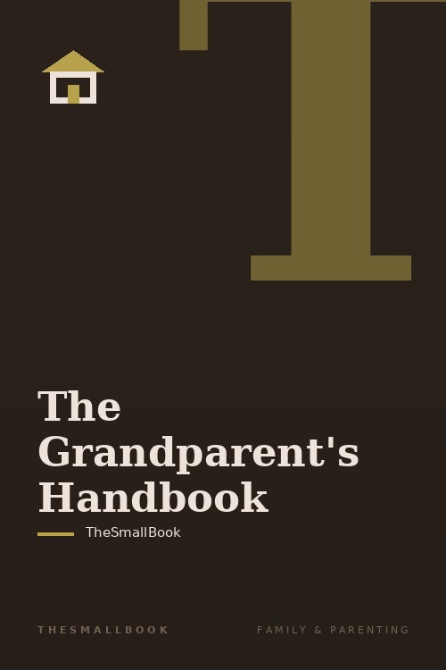

Library › Family & Parenting
The Grandparent's Handbook - Summary & Key Lessons

A TSB Original on the second great love of your life, done right.
📖 OPEN THE FULL INTERACTIVE BREAKDOWN →🌐 Read it in Hindi, Hinglish, Gujarati, Tamil & 22 more languages, with audio.
💡 The Big Idea
This TSB Original is written for the grandparent who wants to be central without being a problem. It covers the modern job description: backing the parents' rules while being the child's soft place, distance grandparenting over video calls, blending families and second marriages, money help that does not buy control, and the long game, being remembered as safety. The research it draws on is plain: children with involved, low-conflict grandparents do measurably better, and the grandparents live longer too.
🧠 The 8 Key Lessons
Lesson 1: The Prime Directive: Support the Parents, Publicly
One: The Job Description Nobody Gives You
Every grandparent conflict begins at the same border: whose rules govern this child? The handbook's prime directive settles it: the parents rule; you advise when asked and model always. Undermining, the extra sweet after a parental no, the eye roll at the screen time limit, buys a grandchild's delight at the price of your children's trust, and trust is the currency your access is paid in. The grandparents grandchildren keep are the ones their parents never have to defend against.
📖 Example: A grandmother who thought her daughter's no-sugar rule was theatre kept a secret biscuit tin. The discovery cost her unsupervised visits for a year. Her neighbour, who enforced a stricter rule than her own at the parents' request, has the children every Friday. The arithmetic is not subtle, and grandchildren eventually do it themselves. Read the full example →
⚡ Do this: Ask your children this week: what are your three house rules you most need me to back? Write them down and back them visibly.
Lesson 2: Be the Harbour: What Grandchildren Actually Store
Two: The Emotional Architecture
Ask adults about beloved grandparents and they rarely mention expenditure. They remember being listened to without a phone, food that meant someone noticed their tastes, a house where their stories were front page news. The handbook calls this harbour work: a place where the child's worth is not performance based. In a childhood of school metrics and parental worry, one harbour where you are simply delightful company is developmental gold, and only grandparents have the time and the distance to run it.
📖 Example: A grandfather in our research kept a notebook of his granddaughter's sayings from age three. At her graduation he gave her the notebook. She wept; the family still talks about the gift that cost a decade of attention and about fifty rupees of paper. Witnessing, compounded, is the inheritance that lands. Read the full example →
⚡ Do this: Start the notebook for each grandchild this week: dated sayings, drawings, small events. Ten years from now it will be priceless, because you started today.
Lesson 3: Distance Grandparenting: A Craft, Not a Compromise
Three: Love Across Time Zones
Millions of grandparents now do the job across oceans, and the handbook treats it as a craft with technique: short regular calls beat long rare ones, rituals beat conversations for the under sevens, read the same book on both ends of the call, play the same game, cook the same recipe on Sunday in two kitchens. The goal is a shared life with recurring furniture, not a series of interviews with a small stranger asking what they learned in school.
📖 Example: A grandmother in Kochi and a grandson in Toronto read one chapter of the same novel every Sunday, hers in Malayalam translation, his in English. He is fourteen now and the calls continue, because the ritual grew up with him instead of expiring with the picture books. Read the full example →
⚡ Do this: Start one shared ritual this month: same book, recipe, match or serial on both ends. Put it in both calendars as unmissable.
Lesson 4: Money Without Strings, Help Without a Throne
Four: The Generous and the Wise
Grandparent money is love with a bank transfer, and it corrupts exactly like power when it arrives with conditions. The handbook's rules: give to the parents' plan, not around it; fund experiences and education before objects; never let a child learn that grandma is the appeals court for parental noes; and if you help adult children, write the terms like family and like adults, amount, purpose, and whether it is gift or loan, because ambiguity is the seed of the worst family lawsuits we autopsy elsewhere in this library.
📖 Example: One grandfather paid school fees directly to the school for a decade, told both parents the full arrangement once, and never mentioned it to the children. The help landed as pure infrastructure. His brother funded treats against the parents' wishes and bought himself a decade of being managed. Read the full example →
⚡ Do this: Convert one money habit this month: align one gift with the parents' plan, and put one family loan's terms in writing, kindly.
Lesson 5: The Long Game: Being Remembered as Safety
Five: Legacy Is a Feeling Before It Is a Will
The closing chapter turns to what remains: grandchildren forget lectures and keep climates. The handbook advises building the memory deliberately, your stories told at their level, your skills passed hand to hand in kitchens and workshops, your own parents kept alive in anecdotes so the child knows they come from a line of people. And it advises finishing the paperwork of love: the will, the letters, the recorded voice, because being remembered as safety includes not leaving a courtroom as your monument.
📖 Example: A retired teacher recorded herself reading twenty stories before her voice weakened. Her great grandchildren, unborn when she died, now fall asleep to their great grandmother. The family calls it the library of her voice. It took one winter of evenings with a phone recorder. Read the full example →
⚡ Do this: Record one story in your voice this week for descendants you may never meet. Then check that your will says what your love intends.
Lesson 6: The Emergency Role: Be the Calm They Can Summon
The Role
Every family eventually has the 2 a.m. phone call, and grandparents are either the calm at the end of it or another emergency in progress. The craft is preparation: know the medications, the paediatrician, the school gate rules, where the documents live, and how to arrive helpful rather than histrionic. Being summonable is a skill built in peacetime, through boring questions asked kindly at Sunday lunches, long before anyone needs the answers at speed.
📖 Example: The grandparents grandchildren call first in the handbook's stories are rarely the most generous. They are the ones who knew the blood group, kept the spare key labelled, and could sit in a hospital corridor without making their fear the family's second patient. Read the full example →
⚡ Do this: Ask the boring questions this month and write the answers down: doctors, medications, documents, spare keys. Being summonable is built in peacetime.
Lesson 7: When the Parents' Rules Are Not Yours
The Role
Bedtimes, sugar, screens, faith, discipline: the parents will set rules you privately consider wrong, and the handbook's position is absolute, their house, their call, your counsel by invitation only. The one exception is safety, where you speak plainly and accept the weather. Grandparents who smuggle exceptions teach grandchildren that rules are negotiable with charm, a lesson that will be used on everyone, eventually including you, at an age when you will enjoy it less.
📖 Example: The case in the programme files is the secret sweet drawer, discovered, as it always is, and converted by the parents into a trust audit of the entire grandparent operation. The sugar was forgiven in a day. The audit took a year, which is the exchange rate on smuggled exceptions generally. Read the full example →
⚡ Do this: Ask the parents, in so many words, which rules are hard lines and which are preferences. Write their answer down and honour the hard lines visibly.
Lesson 8: The Inheritance of Stories Is Your Real Estate
The Role
Money divides; stories bind. The grandparent's unique asset is being the only living bridge to people the grandchildren will never meet, and the asset depreciates unrecorded. The craft is small and regular: one story per visit, told at the table rather than performed, with names, places and one sensory detail. Record the favourites on a phone when the children ask for them again. Repetition is not failure in this medium; it is how a child files a person into permanence.
📖 Example: The programme's most quoted finding is that grandchildren who can tell one story about each great grandparent show measurably stronger resilience in adolescence. Nobody can explain the mechanism cleanly, but the bridge generation is the only supplier, and the supply window is your lifetime. Read the full example →
⚡ Do this: Tell one story this week with names and a sensory detail. When it is asked for again, record it. Repetition is the filing system, not a failure of range.
✅ 5-Step Action Plan
- Ask your children for their three rules; back them visibly.
- Start the sayings notebook for each grandchild today.
- Begin one shared ritual across any distance this month.
- Align one money gift with the parents' plan; write one loan down.
- Record one story in your voice this week.
- Tell one story of your own parents at the next family meal.
- Review the will this quarter; let safety include paperwork.
⚠️ When This Doesn't Work
A TSB Original synthesising developmental research and family practice. Families in conflict, custody disputes or estrangement need mediation and counsel beyond any handbook, including this one.
💀 The Graveyard Proves It
💬 Best Quotes from The Grandparent's Handbook
- “The parents make the weather. Grandparents are the climate of love around it.”
- “Be the harbour, not the second captain.”
- “Grandchildren do not need a richer childhood. They need a witnessed one.”
Interactive version: mark lessons as read, listen in your language, share quote cards.